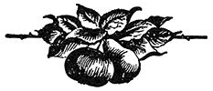
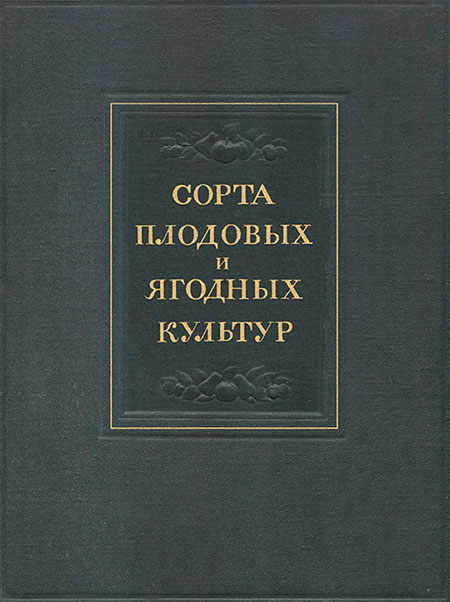

Сорта плодовых и ягодных культур

Введение
Предлагаемая книга «Сорта плодовых и ягодных культур» явилась итогом большой исследовательской работы Научно-исследовательского института плодоводства им. И. В. Мичурина и его опытной сети по изучению сортов в различных условиях нашей страны.

В этой книге, при характеристике сортов, учтены также материалы:
- Центральной генетической лаборатории им. И. В. Мичурина,
- Всесоюзного института растениеводства,
- Никитского Ботанического сада им. Молотова
- и многочисленной армии опытников-мичуринцев.
При составлении книги авторы имели в виду дать производственно-биологическую характеристику наиболее распространённым сортам, включённым в стандартный сортимент РСФСР.
Вводимые в стандартные сортименты сорта разделяются на 3 основные группы, которые определяют, насколько сорт удовлетворяет требованиям плодоводства данной области, насколько он испытан в производственных условиях.
- группа I — основные сорта, в наибольшей степени отвечающие требованиям социалистического плодово-ягодного хозяйства данной зоны, проверенные по зимостойкости, урожайности и с высокими качествами плодов.
Сорта этой группы должны составлять основную массу посадок соответствующей породы в области, примерно 70–80%. - группа II — допускаемые сорта, не удовлетворяющие полностью предъявленным требованиям по своим показателям и уступающие сортам I группы, но по каким-либо хозяйственным признакам ценные, как дополняющие сортимент.
Сорта этой группы внедряют в производство в значительно меньшем количестве по сравнению с сортами I группы.
В процентном отношении эта группа сортов должна занимать 15–20%. - группа III — сорта для широкого производственного испытания. В эту группу включены наиболее перспективные новые сорта, выведенные опытными станциями, опытниками-мичуринцами и выделенные опытными станциями в порядке сортоизучения как местных, так и иностранных.
В первую очередь описывались сорта первой группы, затем второй и, наконец, наиболее перспективные сорта из третьей группы. Описанием охвачены все важнейшие сорта стандартного сортимента. Сорта мало распространённые, имеющие узкорайонное значение, нами не описывались.
В книге описано:
- 222 сорта яблони,
- 77 сортов груши,
- 12 сортов айвы,
- 4 сорта рябины,
- 44 сорта вишни,
- 28 сортов черешни,
- 86 сортов сливы,
- 56 сортов абрикоса,
- 82 сорта персика,
- 48 сортов земляники,
- 30 сортов малины,
- 51 сорт смородины,
- 45 сортов крыжовника.
Особенность и ценность данной книги заключается в том, что в ней основное внимание уделяется производственно-биологической характеристике сортов, поведению их в различных почвенно-климатических условиях. Сорт в нашем понимании не является чем-то застывшим, постоянным, а наоборот, он очень изменчив в своих хозяйственных признаках (зимостойкости, урожайности и др.), в зависимости от условий произрастания.
При характеристике сорта в первую очередь обращалось внимание на его зимостойкость в различных районах распространения, имея в виду, что именно это свойство определяет судьбу сорта в производстве, его урожайность, высокие вкусовые качества плодов и, в конце концов, доходность. Особо отмечалось поведение сорта в суровые зимы 1928/29 г., 1939/40 г. и 1941/42 г.
Вторым важнейшим производственно-биологическим признаком сорта является его продуктивность и скороплодность. К сожалению, цифровых данных по урожайности сортов в различных районах накоплено ещё далеко недостаточно. Поэтому авторы во многих случаях были лишены возможности привести их. Во всяком случае весь имеющийся материал в этом отношении был использован.
Важное место в описании сорта занимает характеристика таких признаков, как:
- время созревания,
- лёжкость,
- потребительский период,
- транспортабельность
- и использование плодов для разных видов технической переработки.
Кроме этого, для большинства сортов приведены данные о самобесплодности и лучших опылителях, обеспечивающих получение высоких урожаев. В связи с большой изменчивостью сортов в производстве при описании того или иного сорта обращалось внимание на необходимость отбора лучших клонов для размножения.
Особенностью современного этапа в сортоведении является установление сортовой агротехники. Этот раздел в науке ещё недостаточно разработан, но уже сейчас мы можем говорить о применении различных приёмов агротехники, специфических для отдельных групп, сортов, объединённых общими биологическими признаками. Эти материалы также учтены при характеристике сорта.
Описание морфологических признаков сорта играло подчинённую роль. При этом было обращено внимание, главным образом, на те отличительные признаки, которые имеют значение для распознавания сортов.
Эта ценная и очень нужная в настоящее время книга подготовлена к печати в 1948 г. Однако по независящим от авторов обстоятельствам выпуск её задержался до настоящего времени, и авторы были лишены возможности внести новые данные о сортах. За время нахождения книги в печати в сортовом составе также произошли значительные изменения. Существующие сортименты пополнялись новыми сортами советской селекции, описание которых помещается в конце книги. С другой стороны, некоторые описанные в книге сорта исключены из стандартного сортимента.
Книга написана коллективом авторов научных работников Научно-исследовательского института плодоводства им. И. В. Мичурина, плодовых опытных станций и Никитского Ботанического сада им. Молотова в следующем составе:
- Веньяминов А. Н. — доктор сельскохозяйственных наук
(общее руководство и редакция; сорта сливы, сорта вишни). - Исаев С. И. — доктор сельскохозяйственных наук
(мичуринские и среднерусские сорта яблони, а также большая часть общего описания этой культуры). - Заец В. К. — кандидат сельскохозяйственных наук
(сорта груши и южные сорта яблони). - Сергеев Л. М. — кандидат сельскохозяйственных наук
(южные сорта яблони, груши, сливы и сорта черешни). - Ильинский А. А. — кандидат сельскохозяйственных наук
(южные сорта яблони и сорта айвы). - Жаворонков П. А. — доктор сельскохозяйственных наук
(уральские сорта яблони). - Леонов И. М. — кандидат сельскохозяйственных наук
(сибирские сорта яблони, часть новых сортов яблони, груши, сливы, смородины). - Рябов И. Н. — кандидат сельскохозяйственных наук
(сорта персика). - Костина К. Ф. — кандидат биологических наук
(сорта абрикоса). - Кашичкина М. И. — кандидат сельскохозяйственных наук
(сорта малины и земляники). - Смольянинова Н. К. — кандидат сельскохозяйственных наук
(сорта смородины). - Симонова М. Н. — кандидат сельскохозяйственных наук
(сорта крыжовника). - Черненко С. Ф. — доктор сельскохозяйственных наук
(сорта яблони: Июльское, Оранжевое, Первенец, Розовое превосходное, Суворовец, Анис апортовый, Брат Победы, Нежное, Победа, Титфлёр).
Кроме того, отдельные сорта плодово-ягодных культур описаны:
- Финаевым Е. П.,
- Тихоновым Н. Н.,
- Середенко А. И.,
- Гориным Т. И.,
- Сергеевой К. Д.,
- Колесниковым М. А.,
- Мотовиловым Б. А.,
- Ульянищевым М. М.,
- Горшковым И. С.,
- Петровым А. В.,
- Архиповым Б. П..
Книга в окончательной редакции просмотрена И. В. Белохоновым — директором Научно-исследовательского института плодоводства им. И. В. Мичурина.
Академик П. Н. Яковлев
Великая Октябрьская социалистическая революция открыла широчайшие возможности для быстрого роста в нашей стране садоводства — важной отрасли сельского хозяйства.
Благодаря заботам Коммунистической партии и Советского правительства площадь под садами неизмеримо возросла. Достаточно сказать, что в царской России к началу войны 1914 г. площадь, занятая под садами, составляла всего 655 тыс. га; за годы советской власти площадь под садами возросла более чем в 2 раза. На смену мелким полупромышленным садам пришли крупные социалистические механизированные хозяйства.
В совхозах и колхозах нашей страны заложены крупнейшие в мире сады площадью в:
- 2300 га (совхоз им. Горького, Краснодарского края),
- 1512 га (совхоз «Агроном», Рязанской области),
- 1800 га (совхоз «Агроном», Краснодарского края),
- 1160 га (колхоз «Путь к коммунизму», Краснодарского края),
- 800 га (колхоз «Садовод», Краснодарского края) и т. д.
Садоводство сильно продвинулось на север и восток. Плодоводство стало промышленной отраслью в Сибири и на Урале, где под садами занято свыше 20000 га. Ныне сады растут там, где о них до Великой Октябрьской социалистической революции не смели и мечтать.
Дальнейший рост социалистического садоводства был нарушен войной 1941–1945 гг. Особенно сильно пострадали сады в районах, подвергавшихся временной немецко-фашистской оккупации. После окончания Великой Отечественной войны была широко организована закладка новых садов и ягодников в колхозах, совхозах и на приусадебных участках колхозников, рабочих и служащих.
Директивы XIX съезда партии по пятому пятилетнему плану развития СССР на 1951–1955 оды предусматривают дальнейшее увеличение площадей под садами и ягодниками. За период 1951–1955 гг. площадь, занятая садами и ягодниками, будет увеличена, примерно, на 70%.
Разрешение этой задачи, поставленной партией и правительством перед плодоводами нашей страны, потребует колоссального количества посадочного материала. Наряду с правильным размещением садоводства по отдельным районам, применением новейшей техники и улучшением организации плодово-ягодного производства, одним из решающих моментов в деле дальнейшего развития садоводства является правильный подбор как старых, так и особенно новых сортов, которые могли бы резко повысить урожайность наших садов и тем самым увеличить выход валовой и товарной продукции.
Повышение урожайности садов и увеличение выхода валовой и товарной продукции на основе внедрения в колхозное и совхозное производство достижений науки и передового опыта — основная задача в области садоводства.
Недалеко то время, когда советский народ превратит свою страну в цветущий сад.
Наука о сортах плодовых растений в нашей стране прошла сложный путь.
Начало русской помологии было положено А. Т. Болотовым более 150 лет тому назад его сочинением «Изображения и описания разных пород яблок и груш, родящихся в Дворениновских, а отчасти и в других садах». Болотов описал более 600 сортов яблок и груш, которые произрастали в его саду, в селе Дворенинове, Алексинского уезда, Тульской губернии, и отчасти в других садах средней полосы России. В своё время этот труд имел бы огромное практическое влияние на судьбы русского садоводства. Но, к сожалению, вследствие косности и бюрократизма царского правительства, совершенно не заботившегося о судьбах отечественного садоводства, помология, составленная ещё в 1797–1800 гг., так и не увидела света.
Плодоводство в России этого периода было потребительским или носило любительский характер. Сады были небольшого размера; только у богатых помещиков сады достигали 10 га и более.
В 40-х годах прошлого столетия была опубликована небольшая книга Н. Красноглазова под названием «Правила плодоводства». В этой книге автор, на основании своего опыта, описывает целый ряд русских сортов, разводимых в Москве и в ближайших к ней районах.
Начиная со второй половины XIX в., в связи с быстрым ростом капитализма в России, садоводство постепенно становится промышленной отраслью. Закладываются крупные садовые хозяйства на юге — в Крыму, на Северном Кавказе и немного позднее в Средней Азии. Крестьянское садоводство также выросло. С промышленной целью садоводством начинают заниматься крестьяне, главным образом в районах Курской, Киевской, Орловской, Харьковской губерний и в Поволжье. Однако существовавший в то время сортимент не мог удовлетворить запросы промышленного плодоводства. Необходимо было срочно принять энергичные меры по улучшению этого сортимента.
Этот период в развитии плодоводства характеризуется стихийным ввозом иностранных сортов не только в южные районы, но и в среднюю полосу России. Подчас эти сорта попадали в неподходящие почвенно-климатические условия и во множестве погибали или прозябали в наших садах и тем самым не оправдывали возлагавшихся на них надежд. Шавров, исследовавший сортименты Крыма, пишет по этому поводу:
«Достоинства наших древнейших сортов плодовых растений совершенно отрицались и рекомендовались одни только иностранные сорта. Нечего говорить, что это увлечение было чрезвычайно односторонне и в известной степени вредно. Новые сады стали представлять из себя помологические коллекции с чрезвычайным разнообразием сортов».
Приведу другой пример: на Северном Кавказе в прошлом столетии садоводы увлекались Бельфлёром жёлтым, сажали его в большом количестве, а после выявления его малой урожайности перепривили и сейчас совсем не разводят.
Анишкевич, например, сообщает:
«В Сочинском округе на Западном побережье Кавказа где с 1872–1874 гг. было приступлено к садоводству и виноградарству также по западноевропейским образцам, только 22 земледельцами затрачено, не считая стоимости земли, до трёх миллионов рублей и дохода не получилось».
В Крыму точно так же можно было наблюдать подобные явления.
Л. П. Симиренко приводит интересный случай с грушей Сен-Жермен, которая в середине прошлого столетия вызвала в Крыму «...настоящую сенжерменскую горячку», и каждый хотел иметь в саду этот сорт. Впоследствии выяснилось, что этот сорт для культуры в долинах, низких, сырых местах непригоден, так как плоды его становятся мелкими, невкусными и сильно поражаются паршой. Многие сады, заложенные этим сортом, были выкорчеваны.
В 1868 г. выходит в свет «Русская помология», составленная Э. Регелем, которая, по образному выражению М. В. Рытова,
«...есть не что иное, как «немецкая помология», вернее немецкая выдумка, не достойная называться именем науки».
В ней Э. Регель утверждает, что
«... мы не в состоянии изменить свойств, данных растениям творцом», и «...типические свойства породы не изменяются климатическими условиями». «Под акклиматизацией нельзя разуметь изменение качеств вида, но только приспособление его к исходному климату и к особенностям климатических условий той или другой страны»,
— писал Э. Регель. Этим он способствовал развитию и теоретическому обоснованию греллевской акклиматизации. Э. Регель считал, что распространение сортов плодовых растений определяется не индивидуальными особенностями, а видовыми и что
«... введение новых сортов в какую-либо страну определяется нынешними границами распределения яблони».
Из этих «теоретических» изысканий Э. Регель делает совершенно необоснованный, неправильный вывод, что самые нежные разновидности яблок могут переносить той же степени холода, как и самые выносливые разновидности, если только они находятся в состоянии совершенного покоя. (Подчёркнуто Регелем — П. Я.) Этим «законом», считает он, определяется возможность перенесения растений из более «нежного климата» в более северный.
В «Русской помологии» Э. Регелем описано 226 сортов яблони в чисто немецком стиле, то есть тщательно описаны морфологические особенности плодов, а о хозяйственно-биологических свойствах не сказано почти ни слова. Поэтому совершенно прав проф. М. В. Рытов, утверждавший, что такая книга принесла больше вреда, чем пользы, и явилась тормозом в развитии русского садоводства. Однако русское садоводство развивалось самостийно, вне зависимости от Западной Европы.
Для обоснования продвижения западных сортов в центральную полосу России Греллем была выдвинута пресловутая теория «акклиматизации». Сущность этой «теории» заключалась в том, что незимостойкие старые западноевропейские сорта, привитые на зимостойкие подвои сибирки и других видов, постепенно изменяются, организм их перестраивается соответственно подвою, и они становятся зимостойкими. Исходя из ложных теоретических установок Грелль считал, что, питаясь соками из стойких подвоев, привитые южные сорта воспримут стойкость этих подвоев. Эти теоретические установки Грелля затормозили движение научной мысли не на один десяток лет. И. В. Мичурин в начале своей деятельности потратил более 10 лет на опыты по акклиматизации южных пород и сортов и убедился в несостоятельности греллевской теории продвижения старых южных сортов на север путём прививки. И. В. Мичурин выдвинул другой принцип акклиматизации растений путём выведения новых сортов из семян. Акклиматизация по Греллю дорого обошлась русскому плодоводству.
В жизни это «заимствование» теоретических и практических установок приводило к многочисленным ошибкам, разочарованию. Создавалось ложное убеждение, что занятие садоводством при наших климатических условиях не может рассчитывать на успех.
И немудрено! Царское правительство не придавало никакого значения делу улучшения сортимента. Правильного и систематического изучения сортов не существовало. И. В. Мичурин писал:
«В самом деле, разве это не поразительный факт, что вполне хороший сорт существует в стране несколько столетий, а сколько-нибудь полного описания достоинств его вы не встретите ни в одной книге, ни в одном журнале, страницы которых так и пестрят без конца повторяемыми описаниями различных бере, дюшесов, ренетов, кальвилей и т. п. заграничных выходцев. О своих же сортах не пишут почти ничего; как будто бы у нас уже нет ничего достойного описания. И нам поневоле, за неимением достаточно полных сведений о русском садоводстве, приходится читать очень мало подходящие для нас различные зарубежные рефераты, предлагаемые нам находчивыми издателями единственно лишь потому, что такой материал ничего не стоит для них».
Косность и бюрократизм в департаменте земледелия царской России были настолько велики, что на призыв И. В. Мичурина об организации опытного сада по выведению новых сортов правительство ответило отказом. Помологические исследования вели отдельные лица на свой страх и риск или в лучшем случае общества любителей садоводства.
К этому времени следует отнести начало славной деятельности великого преобразователя природы И. В. Мичурина, открывшего новые пути в улучшении сортимента плодовых растений. В конце прошлого столетия начали свои исследования по изучению сортимента В. В. Пашкевич, М. В. Рытов, С. С. Рогозин, Н. И. Кичунов, Л. П. Симиренко, чьи работы очень высоко подняли наше отечественное сортоведение. Они отошли от традиционного схоластического описания сортов и классификации по Люкасу и подобным ему учёным, а изучали сорта в саду, в зависимости от условий существования.
И. В. Мичурин, внимательно следивший за проявлением новой мысли, способствовавшей процветанию плодоводства, очень лестно отзывался о новом направлении в помологии, ставившим целью в первую очередь изучение реакции сорта на комплекс внешних условий и его биологические особенности. В статье «Русская молдавка» он писал:
«Излагая описание признаков и особенностей нового сорта, я постараюсь, насколько возможно, для начала придерживаться нового и более полезного, в сравнении с прежним, пути, рекомендованного глубоко уважаемым В. В. Пашкевичем, в его статье по этому поводу, помещённой в февральской книжке «Вестник» за 1910 год. Такие ценные и истинно полезные статьи настолько редки в нашей русской литературе, что могут без преувеличения сказать — прямо не находишь слов, чтобы выразить всю глубокую и искреннюю благодарность автору... только при таком полном и главное вполне отвечающем цели своего назначения помологическом изложении особенностей каждого сорта плодовых растений мы легко сможем выйти из бесконечных путаниц в определении различных сортов и помология как наука станет, наконец, на твёрдую почву и будет полезна для дела...»
В начале XX в. вышли в свет классические сочинения наших отечественных плодоводов. В первую очередь необходимо отметить работы выдающихся русских учёных — М. В. Рытова, Л. П. Симиренко, В. В. Пашкевича, создавших новое направление в сортоведении. В 1912 г. вышло в свет «Крымское промышленное плодоводство» Л. П. Симиренко, наиболее полное и лучшее сочинение о разводимых в Крыму сортах, не потерявшее значение и до сего времени; в 1914 г. появились «Русские яблоки» М. В. Рытова. В этом труде М. В. Рытов подводит итог своим многолетним исследованиям по изучению сортов средней полосы России. Он устанавливает, что сорт в культуре изменяется и представляет группу клонов, отличающихся определёнными хозяйственными признаками. Появление различных клонов М. В. Рытов объясняет почковой изменчивостью. Так, он описывает:
- 7 вариаций Аниса,
- 17 вариаций Антоновки,
- 7 вариаций Титовки,
- 3 вариации Коричного,
- 3 вариации Грушовки.
В связи с почковой изменчивостью он рекомендует обратить внимание на выбор племенных деревьев и даже ветвей для размножения. Систематический отбор черенков по хозяйственным признакам улучшает породу сорта.
В. В. Пашкевич
Работы В. В. Пашкевича, выпущенные под названием «Плодоводство в России», обогатили наши знания о местных сортах Поволжья, областей средней полосы России и других мест. В. В. Пашкевич высоко поднял роль местных сортов. Его труды в дальнейшем послужили материалами для районирования плодоводства. На исследования В. В. Пашкевича в своих трудах ссылается В. И. Ленин. В. В. Пашкевич, в отличие от немецких помологов, с исключительной настойчивостью прививал мысль о необходимости изучения свойств сортов в зависимости от условий климата и агротехники. Роль Пашкевича в создании нового направления в помологии очень велика.
Особо выдающуюся роль в развитии учения о сортах сыграл И. В. Мичурин своими блестящими исследованиями по выведению новых сортов и улучшению старых. Его работы оказали огромнейшее влияние на развитие плодоводства в нашей стране. И. В. Мичурин начал свою деятельность в конце XIX в., сначала в качестве сторонника идей Грелля, а затем, убедившись в неправильности их, он со всей присущей ему страстью обрушился на эти идеи и доказал их теоретическую несостоятельность.
В противовес греллевской концепции о возможности акклиматизации стадийно старых сортов И. В. Мичурин выдвинул и доказал дарвиновскую точку зрения, что акклиматизация возможна только путём посева семян и
«... что никакой сорт иностранного происхождения не может акклиматизироваться путём переноса готовых уже растений, их черенков, отводков и т. п. и все попытки в этом роде по большей части не достигают своей цели».
И. В. Мичурин стал на новый, революционный путь улучшения сортиментов плодовых и ягодных растений через селекцию. Руководящей идеей И. В. Мичурина было изменение географии плодовых растений.
«Мы смело можем рассчитывать иметь в своих садах черешни, виноград, абрикосы и, наконец, может быть даже и персики»,
— писал И. В. Мичурин.
Им выведено около 300 сортов плодовых, ягодных, технических и других растений. Большое количество его сортов занимают ведущее положение в стандартных сортиментах многих областей нашей страны. Так, например, в прошлом в сортименте средней полосы России зимних сортов почти не было. Теперь, благодаря внедрению мичуринских сортов, срок потребления плодов в средней полосе удлиняется — яблонь на 3 месяца, а груш — до 5–6 месяцев.
И. В. Мичурин
И. В. Мичурин ещё три четверти века назад поставил перед собой смелую в то время задачу: отодвинуть крайние северные ареалы — границы произрастания южных пород плодовых, ягодных и других растений на тысячу километров к северу. Благодаря своим замечательным методам управления развитием растений он блестяще разрешил эту задачу — отодвинул далеко на север границы произрастания таких южных пород, как виноград, абрикос, миндаль, черешня, айва, ренклоды, груши с зимней лёжкостью плодов и т. д.
Огромная заслуга И. В. Мичурина перед нашей Родиной заключается не только в том, что он вывел около трёхсот новых ценных сортов, из которых свыше шестидесяти вошли в стандарт многих областей Советского Союза, и этим способствовал быстрейшему развитию плодоводства и виноградарства в нашей стране. Его заслуга состоит прежде всего в том, что он разработал такие общебиологические положения, которые составили новую эпоху в развитии творческого дарвинизма.
Основные методы работы И. В. Мичурина по созданию новых высокопродуктивных сортов плодово-ягодных растений для разных климатических зон Советского Союза являются классическим образцом быстрого и планомерного выведения этих сортов, приспособленных к местным условиям.
И. В. Мичурин понимал, что человек должен быть творцом эволюции органических форм; при создании новых сортов он должен учитывать требования производства, а при распространении их он должен непременно опираться на массы, на народ. Горькое чувство одиночества испытал на себе И. В. Мичурин в течение сорокадвухлетней работы при царском самодержавии. Эти мечты о связи науки с производством осуществились только после Великой Октябрьской социалистической революции.
Прекрасно и вдохновенно звучат его слова, посвящённые колхозному строю:
«Я вижу, что колхозный строй, через посредство которого коммунистическая партия начинает вести великое дело обновления земли, приведёт трудящееся человечество к действительному могуществу над силами природы. Великое будущее всего нашего естествознания в колхозах и совхозах».
Селекционерам, работающим по выведению новых сортов в различных областях растениеводства, всегда следует помнить основное положение И. В. Мичурина, что организм и среда неразрывно связаны между собой. Условия жизни всегда определяют наследственность, а познавая наследственность, мы можем сознательно изменять условия жизни в определённый момент развития молодого организма и направленно, по заранее задуманному плану, выводить новые сорта с нужной нам наследственностью. Этому направлению в своей работе по целесообразному воспитанию гибридных сеянцев И. В. Мичурин придерживался всю свою жизнь.
В настоящее время каждому селекционеру и агроному известно, что без соответствующего правильного ухода и воспитания гибридов нельзя вывести ни одного хорошего сорта растения; без соответствующей агротехники нельзя получить хорошего урожая.
«... известно, — говорит по этому поводу акад. Т. Д. Лысенко, — что хорошие сорта растений, а также хорошие породы животных в практике всегда создавались и создаются только при условии хорошей агротехники, хорошей зоотехнии. При плохой агротехнике не только из плохих сортов никогда нельзя получить хорошие, но во многих случаях даже хорошие культурные сорта через несколько поколений делаются плохими».
В августе 1948 г. в нашей стране на сессии Всесоюзной Академии сельскохозяйственных наук имени В. И. Ленина был завершён идейно-политический разгром реакционного, идеалистического вейсмано-моргановского направления. В результате вековой борьбы между идеализмом и материализмом в биологической науке победило прогрессивное материалистическое мичуринское направление.
В. М. Молотов на торжественном заседании Московского Совета, посвящённом 31-й годовщине Великой Октябрьской революции, 6 ноября 1948 г. сказал, что:
«Дискуссия по вопросам теории наследственности поставила большие принципиальные вопросы о борьбе подлинной науки, основанной на принципах материализма, с реакционно-идеалистическими пережитками в научной работе, вроде учения вейсманизма о неизменной наследственности, исключающей передачу приобретённых свойств последующим поколениям».
Мичуринская биологическая наука победила потому, что она построена на прочном фундаменте диалектического материализма, всепобеждающая сила которого проверена и подтверждена всем историческим ходом развития как общественной жизни, так и природных явлений.
Этот диалектический метод подхода к разнообразным явлениям живой природы учит всех биологов, работающих в разных отраслях естествознания, как, соответственно изменяя условия внешней среды, мы можем сознательно, планово и направленно изменять природу растительных и животных организмов.
Великое прогрессивное значение мичуринской биологической науки в том и заключается, что она позволяет вскрывать закономерности в природе, используя которые человек может сознательно управлять в своих интересах миром животных и растений.
Вот почему можно сказать, что мичуринское направление в биологии является дальнейшим развитием дарвинизма; вот почему дарвиновское учение, освобождённое от мальтузианских ошибок трудами корифеев науки, классиков марксизма-ленинизма, и преобразованное в трудах нашего великого русского учёного И. В. Мичурина, является, по своему существу, качественно новым творческим дарвинизмом.
Передовое мичуринское направление в биологической науке получило в нашей стране всенародное признание. Мичуринская наука стала самой передовой и прогрессивной биологической наукой в мире. Мичуринское учение открывает широчайшие перспективы в деле выведения новых сортов в наиболее короткие сроки. Оно вооружает практиков научно обоснованными методами планомерного изменения природы растений в целях поднятия урожайности полей и садов.
И. В. Мичурин никогда не был кабинетным теоретиком. Все свои глубочайшие теоретические обобщения И. В. Мичурин делал на основе опыта, практики. Результатом его деятельности явились выведенные им сорта, которые вошли в сокровищницу сортового фонда СССР.
Исходя из правильного понимания роли сорта в плодовом хозяйстве нашей страны, И. В. Мичурин доказал, что каждая область должна иметь свой сортимент, хорошо приспособленный к местным условиям. В связи с огромным размахом развития садоводства в нашей стране И. В. Мичурин ставит задачу районирования сортов на основе их изучения в различных районах.
Порайонное агробиологическое изучение сортимента плодовых и ягодных культур началось при жизни И. В. Мичурина и под его руководством через организованную мощную сеть опытных станций по плодоводству.
Сортименты плодовых и ягодных культур впервые начали разрабатываться Всесоюзным институтом растениеводства под руководством проф. В. В. Пашкевича, который в 1931 г. составил стандартные списки сортов для различных краёв и областей РСФСР.
После реорганизации в 1931–1932 гг. опытной сети по плодоводству, работа по сортовому районированию в РСФСР была поручена Научно-исследовательскому институту плодоводства им. И. В. Мичурина. В других советских республиках сортовое районирование разрабатывалось республиканскими институтами или местными опытными станциями.
В основу подбора и районирования сортов было положено углублённое изучение производственно-биологических особенностей отдельных сортов в различных районах и областях, проведённое опытными учреждениями СССР и сельскохозяйственными органами. В результате большой исследовательской работы были составлены списки стандартных сортов для отдельных краёв, областей и автономных республик. В связи с суровыми зимами 1938–1942 гг. стандартный сортимент неоднократно пересматривался и уточнялся. Для приусадебных участков колхозников, рабочих и служащих используется тот же сортимент, что и для промышленных насаждений в совхозах и колхозах.
Из общего количества включённых в стандарт 1000 сортов — 518 сортов, или около 52%, введено в стандартные сортименты впервые после Великой Октябрьской социалистической революции. Таким образом, за годы советской власти сортимент плодовых и ягодных культур обновлён больше, чем на 50%.
Из вновь введённых после революции 518 сортов:
- 211 являются сортами советской селекции,
- 197 местных сортов,
- 110 сортов интродуцированных в результате большой работы советских научных учреждений по изучению мирового сортового фонда плодовых и ягодных культур.
За период советской власти заново создан сортимент Урала и Сибири, что обеспечило широкое развитие садоводства в этих районах. Площадь под садами здесь за этот период выросла в десятки раз. Сортименты районов средней зоны плодоводства коренным образом были обновлены за счёт внедрения в производство лучших мичуринских и местных сортов народной селекции. Мичуринские сорта во многих районах средней полосы СССР заняли ведущее положение. Всего в сортимент введено свыше 50 мичуринских сортов.
В южной зоне плодоводства поднята роль устойчивых и высокопродуктивных местных сортов. В последнее время на Украине стали внедрять в производство новые сорта яблони и груши, которые по достоинствам не уступают лучшим ранее произраставшим там сортам, а по зимостойкости намного превышают их.
И. В. Мичурин мечтал о том, чтобы каждая область имела свои высокопродуктивные сорта, выведенные на месте и хорошо приспособленные к местным условиям. Эта мечта И. В. Мичурина успешно осуществляется. В настоящее время опытными учреждениями СССР выведено свыше 700 новых сортов и элитных сеянцев. Новые выведенные сорта как можно быстрее должны быть испытаны, размножены и внедрены в производство.